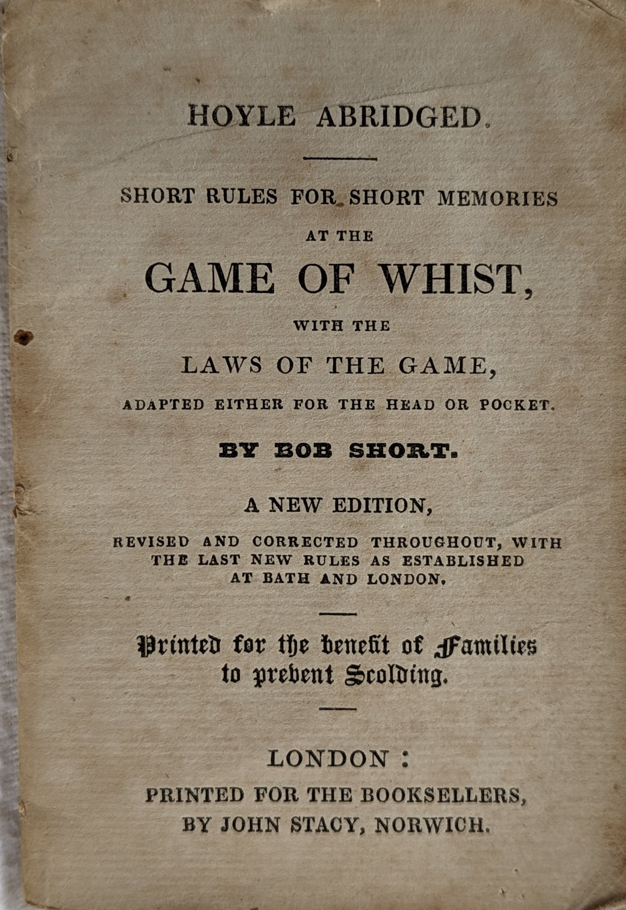

A Descriptive Bibliography of Edmond Hoyle
Copyright © 2014-26 by David Levy
(page updated 2023-11-26)User Guide
Stacy.Whist.1833
Short Rules for Whist, printed for the booksellers, by John Stacy, 1833.
 |
Title: | HOYLE ABRIDGED. | [short rule] | SHORT RULES FOR SHORT MEMORIES | AT THE | GAME OF WHIST, | WITH THE | LAWS OF THE GAME, | ADAPTED EITHER FOR THE HEAD OR POCKET. | BY BOB SHORT. | A NEW EDITION, | REVISED AND CORRECTED THROUGHOUT, WITH | THE LAST NEW RULES AS ESTABLISHED | AT BATH AND LONDON. | [short rule] | Printed for the benefit of Families | to prevent Scolding. | [short rule] | LONDON : | PRINTED FOR THE BOOKSELLERS, | BY JOHN STACY, NORWICH. |
| Collation: | 10.3 x 7.0: [A]18 [unsigned]; 18 leaves, pp. [1–9] 10–12 [13] 14–23 [24] 25–33 [34–36] |
| Contents: | Signature (Page) Reference | Contents | Signature (Page) Reference | Running Titles |
| A1r–A1v (1–2) | [missing in only copy seen] | |||
| A2r (3) | title | |||
| A2v (4) | blank | |||
| A3r (5) | ‘THE PRESENT | IMPROVED AND ENLARGED EDITION | OF THIS LITTLE WORK, | IS MOST RESPECTFULLY | Dedicated to the Public, | BY THEIR | VERY OBLIGED, OBEDIENT, | AND HUMBLE SERVANT, | BOB SHORT, Jun. | Long's Hotel, Jan, 1833.’ | |||
| A3v (6) | blank | |||
| A4r (7) | ‘TO THE PUBLIC. | [...] | BOB SHORT.’ | |||
| A4v (8) | blank | |||
| A5r–A6v (9–12) | ‘DEDICATION. | [short rule] | TO THE FOUR KINGS. | [...] | Your devoted Slave, | BOB SHORT. | Baker's Coffee-House, | Exchange Alley, | Jan. 1, 1793.’ | |||
| A7r–A17r (13–33) | ‘THE | GAME OF WHIST. | [...] | [colophon]’ | |||
| A17v (34) | blank | |||
| A18r–A18v (35–36) | [missing in only copy seen] |
| Printer: | John Stacy |
| Colophon: | ‘Norwich : | Printed by John Stacy.’ |
| Copies Seen: | Levy [1610] (Lacking A1.18, likely blank pages, pasted to a printed wrapper) |
| Notes: | The dedication on A2r(5) is by Bob Short, Jun. |